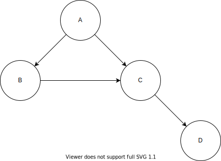

TUTORIAL
Učenje Bayesove mreže (PGM) iz dataseta
Za potrebe ovog tutoriala izmislio sam svoj neki model i u numpyju generirao dataset. To radim da a) imate ovaj gore zadatak za vjezbu (jer je zadatke izgleda nemoguće za naci na internetu) i b) ovaj moj je općenitiji. Takoder, molio bih da sve sto sam napisao provjerite i da se moguce greske prijave ili meni ili administratoru ili pritiskom na objavu->prijavi pa da se popravi.
Problem:
Zajednicka distribucija raspisana je na sljedeci nacin:
P(A,B,C,D) = P(A)P(B | A)P(C | A,B)P(D|C)
Nauciti parametre pomocu sljedeceg dataseta:
\begin{array}{ |c|c|c|c| }
A & B & C & D \\
\hline
0 & 3 & 1 & 1 \\
1 & 3 & 1 & 0 \\
1 & 1 & 0 & 1 \\
1 & 2 & 1 & 0 \\
1 & 1 & 1 & 0 \\
1 & 1 & 0 & 0 \\
1 & 3 & 1 & 0 \\
0 & 2 & 0 & 0 \\
1 & 2 & 1 & 1 \\
1 & 3 & 0 & 0 \\
0 & 2 & 1 & 1 \\
0 & 2 & 0 & 0
\end {array}
Zadatak 1
Nacrtati model

Zadatak 2
Nauciti distribucije varijabli pomocu dataseta.
Prvo ponavljanje ViSa, sto je (diskretna) distribucija? To je u biti tablica s jednim retkom, gdje stupci odgovaraju vrijednostima, a u tablici se nalaze odgovarajuce vjerojatnosti stupaca. Suma svih vrijednosti u jednom retku mora biti, dakako, 1.
Zadatak se rjesava redom, od prvog cvora ka ostalima (haha streberi bi rekli topoloski sortiranim grafom). Tako se u ovom slucaju prvo odreduje distribucija od A. A moze poprimiti samo 2 vrijednosti, 0 ili 1, od toga 8 jedinica a 4 nule. Therefore
A \sim
\begin{array}{ c|c }
0 & 1 \\
\hline
4 & 8
\end{array}
Pazljivi citatelj ce primjetiti “cekaj malo pa suma u retku nije 1” i to je istina. Razlog za to je osobni: ja uvijek prvo popisem brojnost svih vrijednosti pa onda na kraju kad sve provjerim, samo dodam /12 ili koji vec broj. Drugi razlog je Laplaceovo zagladivanje - ali to necemo sad spominjat sve do samog kraja.
Okej sad, kad imamo P(A), iduca je po redu P(B). No, ovaj puta ona ne dolazi sama - ona je uvjetovana varijablom A. Kako se to odražava na njenu tablicu distribucije? Pa jako puno u biti - vise nema samo jedan redak, vec je jedan redak po mogucoj realizaciji uvjeta. Da ponovim: tablica uvjetne distribucije neke varijable ima onoliko redova koliko njen uvjet ima razlicitih vrijednosti. To znaci da ce nam tablica P(B|A) imati dva retka, a stupaca koliko ona ima razlicitih vrijednosti (tocno 3).
Prvo uzmemo, recimo, kad je uvjet A=0 ispunjen (konkretno 1, 8, 11, 12 redak (ako retke indeksiramo od 1 :) )). Vidimo da se B realizirala jednom kao 3, triput kao 2 i nijednom kao 1. Pravimo tablicu:
B|A \sim
\begin{array}{ c||c|c|c }
A & 1 & 2 & 3 \\
\hline
0 & 0 & 3 & 1
\end{array}
A sad gledamo sve one retke di je uvjet A=1 ispunjen. Ovdje se pak B realizirala triput kao 1, dvaput kao 2 i triput kao 3. Dakle nadopunjujemo nasu tablicu:
B|A \sim
\begin{array}{ c||c|c|c }
A & 1 & 2 & 3 \\
\hline
0 & 0 & 3 & 1\\
1 & 3 & 2 & 3
\end{array}
Sanity check - suma svih vrijednosti je 12, sto je jednako svim broju primjera. All gucci. Prije iduce varijable, kratka neobavezna digresija:
Ovo nekog mozda podsjeti na zajednicku distribuciju dvije varijable P(A, B) i to i nije toliko daleko od istine jer su obje tablice, u biti, funkcija od dvije varijable (i zbog tog dvije dimenzije (P(A) je imala samo jednu dimenziju :) ) Razlika je u tome sto u tablici zajednicke distribucije suma bas svih elemenata mora bit 1, dok je u uvjetnoj suma jednog retka 1. No, zasad ionako samo pisemo brojnosti
Moving on. E sad problem moze biti sto ovaj put varijabla ima dva roditelja, stoga ponavljam recenicu:
InCogNiTo124 tablica uvjetne distribucije neke varijable ima onoliko redova koliko njen uvjet ima razlicitih vrijednosti
Koliko razlicitih vrijednosti mogu imati A i B? Odgovor je velicina skupa koji je kartezijev produkt skupova domene slucajnih varijabli A i B. Fensi rječnik za reći 2 \cdot 3 = 6. Dakle, plan rada je ic po svim kombinacijama A i B i pisat kakve se sve vrijednosti od C pojavljuju. Sad necu vise ici korak po korak, nego cu u spojler stavit rjesenje. Napominjem kako je ful bitno pokusati samostalno rijesiti.
SAJK! fkt je bitno da solo probas rijesit. ako ti je samo do tocnog rjesnja, osudujem. Ako pak imas rjesenje, nadam se da sam stavio smjesak na tvoje lice i izvinjavam se zbog neugodnosti
C|A,B \sim
\begin{array}{ c|c||c|c }
A & B & 0 & 1 \\
\hline
0 & 1 & 0 & 0\\
0 & 2 & 2 & 1\\
0 & 3 & 0 & 1\\
1 & 1 & 2 & 1\\
1 & 2 & 0 & 2\\
1 & 3 & 1 & 2\\
\end{array}
Yet another sanity check, suma vrijednosti u desnom dijelu tablice je 12 kao sto bi i trebao biti
Also fun fact: s obzirom da imamo cak 2 uvjeta, ovo bi u teoriji trebao biti tenzor treceg reda (kao matrica samo kockica) no ovo je kakti ispeglani prikaz tog istog tenzora. All is still gucci.
I sad zadnja tablica, D uvjetovan po C, ako ste prezivili proslu tablicu ova je komadić torte. Ukratko, opet ista stvar, idemo po uvjetu, gledamo njegove vrijednosti i gledamo koliko se dogodilo kakvih realizacija nase ciljne varijable.
D|C \sim
\begin{array}{ c||c|c }
C & 0 & 1 \\
\hline
0 & 4 & 1\\
1 & 4 & 3
\end{array}
I za kraj su nam ostale dvije stvari. Prva je to “zloglasno” Laplaceovo zagladivanje koje je u biti najlaksa stvar na svijetu - samo idete po svim brojevima u svim tablicama i dodate +1. Zasto se to radi? Najbolje je objasnit na primjeru uvjetne distribucije P(B|A). Naime u nasem datasetu se nikad nije pojavilo dogadaj A=0 \land B=1. Znaci li to da se to nikad nikad nikad nece desit? pa ne bas - vise je vjerojatno da imamo sh*tan sampling. Zbog tog pretpostavimo da su se svi dogadaji bar jednom desili. To je nase vjerovanje - nasa pristranost, takoder pod nazivom prior probability. To je ono sto vjerujemo da je istina bez da ista znamo o stvanom svijetu. Onda taj nas prior napadnemo s nasim podacima, i dobimo nesto izmedu, tzv. posterior. Novi fun fact:
Kakve veze Laplace ima s time? pa on je u biti takoreci izmislio cijelo podrucje vjerojatnosti i dokazao brdo teorema i svasta. Jedan dan su ga iz fore pitali “ej cika pjer, a kolka je vjerojatnost da ce sutra svanut sunce?” a on se tog ozbiljno uhvatio. Na kraju je rekao da problem nije moguce rjesiti bez nekih dodanih pretpostavki te je kao odgovor predlozio 1 - \frac1{n+1} gdje je n broj dana koji su prosli od pocetka svemira. Tako da, dosta su velike sanse da ce se ovaj ispit ipak pisat, ali opet nisu bas 100% 😛
I zadnja stvar koja nam je ostala je sad sve te tablice (s dodanim jedinicama!) pretvorit u actual distribucije na nacin da dijelimo svaki redak sa sumom u tom retku. Rezultati se nalaze u spoileru:
A \sim
\begin{array}{ c|c }
0 & 1 \\
\hline
\frac{5}{14} & \frac{9}{14}
\end{array}
B|A \sim
\begin{array}{ c||c|c|c }
A & 1 & 2 & 3 \\
\hline
0 & \frac17 & \frac47 & \frac27\\
1 & \frac4{11} & \frac3{11} & \frac4{11}
\end{array}
C|A,B \sim
\begin{array}{ c|c||c|c }
A & B & 0 & 1 \\
\hline
0 & 1 & \frac12 & \frac12 \\
0 & 2 & \frac35 & \frac25\\
0 & 3 & \frac13 & \frac23\\
1 & 1 & \frac35 & \frac25\\
1 & 2 & \frac14 & \frac34\\
1 & 3 & \frac25 & \frac35\\
\end{array}
D|C \sim
\begin{array}{ c||c|c }
C & 0 & 1 \\
\hline
0 & \frac57 & \frac27\\
1 & \frac59 & \frac49
\end{array}
Umro sam dok sam sve ovo pretipko u \LaTeX 🙃